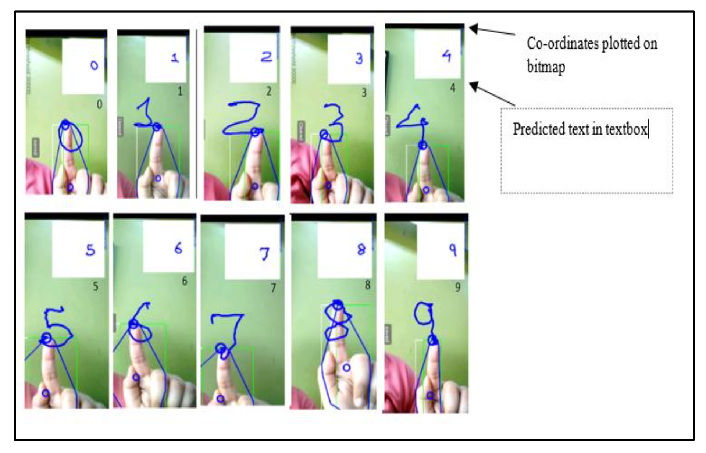
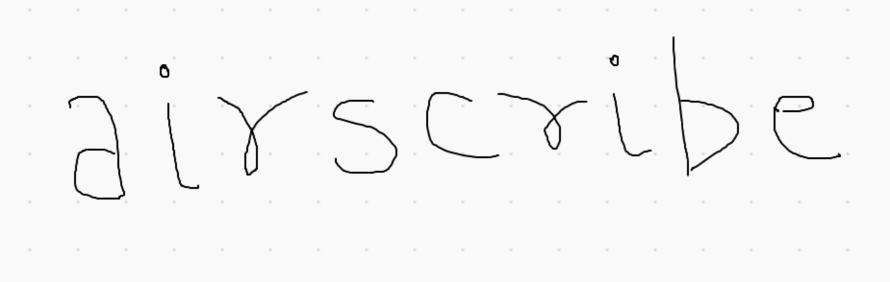
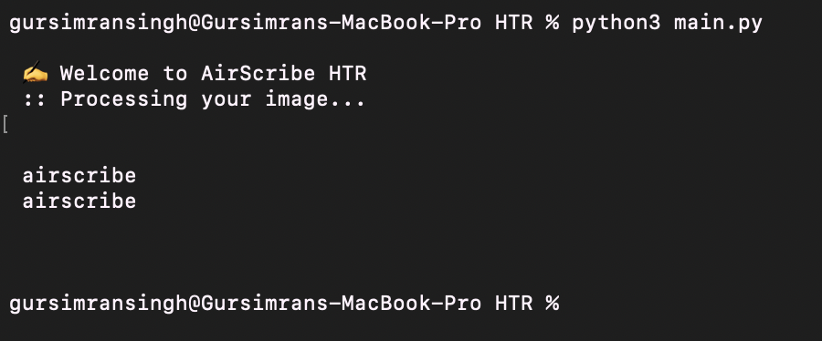

AirScribe provides users with an interface that captures gestures on a virtual canvas.
We see tremendous potential as this product could have several real-world applications. Currently, we see it as a useful tool for professors tackling remote learning. With having to teach virtual classes, it is difficult to share notes or write out concepts like one would on a typical whiteboard. With AirScribe, professors will be able to teach as if they had a whiteboard in front of them, and produce accessible notes for students.
We will be using object tracking and text recognition to convert the input (gestures) into the writing on a virtual canvas and finally into the output (writing captured as text). The gestures will be recognized, read in and correctly inverted by our system. The system will then display the captured output on a virtual canvas with a plain background. This will then be converted into printed text.
We designed AirScribe with virtual learning as a primary use case. This product could help professors have the feel of teaching on a whiteboard by writing in the air in front of them. They can explain concepts on this virtual whiteboard and be able to capture and convert their notes into text to distribute to students.
We planned to implement AirScribe using advanced computer vision and machine learning methods, using the steps detailed in the following overview:
Preprocessing Video Feed: We extract skin color pixels of the user and that region is selected. This is then converted to a grayscale image and thresholding is applied.
Gaussian Blurring: The video frames from the webcam will have noise, especially in lower quality image feeds. Using a Gaussian Blur will reduce sensor noise and effects of low lighting. We can blur the image by convolving it with a low-pass filter kernel. The kernel will be a Gaussian matrix. The output image is effectively blurred.
Convex Hull Detection: We draw a polygon around the hand to find the contours of the hand. The convex hull algorithm uses computations where a non-ambiguous and efficient representation of the required convex shape is constructed.
Fingertip Detection: From the obtained region, we calculate the contours of the hand. The contour points are saved and we detect the tip by finding the contour point with the maximum y-coordinate.
Tracking the Fingertip: Once our fingertip has been determine, we need to plot the coordinates. When the user draws a pattern with that finger, the positions and points of the finger get stored in a linked list. The list grows in size as new points are appended to it, while the finger moves. From this, we map the linked list on a smaller bitmap.
Recognition of Character: Using our created bitmap, we pass this into our model and recognize the character drawn. This uses a convolutional neural network.
This project uses a dataset where the training is done using a set of handwritten digits of the NIST database converted to a 28 x 28 pixel image format. This dataset can be used for classes of [0-9], [a-z] and [A-Z].
Image from "Visual Gesture Recognition for Text Writing in Air"
Approach
We have divided the project in two major parts: Generating an image using object-tracking (computer vision) and using a Handwritten-Text Recognition model to understand the image.
Computer Vision (Object-Tracking)
For this section, we are building a computer vision based system to track motion of the pen or object the user is utilizing to write. The system will be able to record the trajectory of the movement within the frame (camera-view) and capture it on a screen.
Data/ Libraries Used:
OpenCV
NumPy
We implemented this model based on the program flow described below:
Configuration/ Initialization: The program first initializes the frame (virtual canvas that captures writing) and window interface (with which the user interacts) using OpenCV functions. The initial pen position, pen color mask, color definitions for the different pen options, and data structures to store the trajectory are also initialized in this step.
The system then continuously obtains frames from the camera and tracks object motion in three main stages:
Tip location: To locate the tip of the pen from the rest of the environment, we have to isolate it using color segmentation.
This implementation uses an HSV mask for the segmentation, in order to recognize and track the writing object. Out systems allows the user to write with any blue colored object. The HSV mask allows the system to recognize various shades of blue as the pen.
We decided to go with object tracking over finger tracking since using a HSV mask for skin color recognizes other parts of the users body within the frame. Thus, this causes issues with being able to track only the finger being used to write. Using skin color recognition also adds the additional requirement of having to make sure the system is able to handle diverse skin tones. To avoid these constraints, we chose object tracking.
After this, we find the biggest contour and choose the topmost point as our pen tip. Now we can go on to recognize the user's writing.
Gesture recognition and additional commands: We have a predefined set of gestures and keys to execute certain functions.
In the case when the gesture of continued writing is displayed, we continuously need to record new trajectory points and moving velocities and capture these on the screen.
The 'a' key is used to pause gestures from being recognized and displayed on the screen. There are also buttons on the window interface for the user to clear the screen or change writing color.
Trajectory generation: Based on the points in the trajectory point list, we can continue to draw our trajectory on the frame. Since there are different color options, there are data structures (deques) to store the trajectory for each color. The width of the trajectory drawn is currently uniform. A future goal would be to implement a way to select between an assortment of brushes of varying thickness, for more effective expression.
The continuous cycle of tip location, gesture recognition and trajectory recognition continues until the quit button is pressed by the user to exit the window or the clear button is clicked to reset the window.
When the 'q' key is pressed, the user will quit the window. The system can release hold of the camera and exit out of the windows. Now, it is time for the machine learning to do its magic and recognize our drawn text, simultaneously captured on the user's window and on a plain canvas (to be used in the recognition process).
Handwritten-Text Recognition (Machine Learning)
Approach 1 - training a Neural Network
We are building an HTR model that can transcribe the text in the image generated by our Finger-Tracking system. With a Neural Network trained on the EMNIST dataset, we will be able to achieve this goal.
Taking inspiration from this Towards Data Science blog post, we decided to build a NN which consists of CNN, RNN and CTC layer(s). The input images are pre-processed to increase the contrast. In our Final update, the image generated by the Finger-Tracking system will be optimized before being fed to the HTR system. After training our model using a 80/20 train/test split, we were able to achieve a word recognition accuracy of ~75%.
Our Handwritten Text ImageOur HTR system correctly recognising the word 'airscribe' from the image.
Approach 2 - using Google Cloud's Vision API
Google Cloud's Vision API offers powerful pre-trained machine learning models throught REST and RPC APIs. It is OCR to extra text from images and is optimized for dense text.
We ran test for both our Neural Net and a program that uses Vision API and the latter performed better in the following areas:
Speed - It produces considerably faster results when gaining insights at edge. This is an important factor when it comes to building a stable app which can run on edge devices.
Easier to deploy - We found that using the Vision API required a much smaller codebase that could be integrated easily into our current CV program
Multi-lingual Text Detection - Vision API is trained on a larger dataset than EMNIST which is limited to English text. This is an important factor for our product's scale and regional inclusion.
Experiments and Results
Experimental Setup
We tested our program for accurate finger tracking and correct character recognition
Object Tracking: Our computer vision algorithm generated a 28x28 image of the character being drawn in air using the object. We manually tested this by drawing a character in front of the camera and then comparing it with the generated image.
Convolutional Neural Network (CNN): Our CNN, during the training and testing phase, generated an accuracy metric for each character. We further tested this with our own data.
We used these experiments to test our system's accuracy and improve upon it.
Datasets
We used the EMNIST dataset of 28x28 grayscale images of handwritten characters (letters and digits) available for use here. We used this dataset to train our CNN. The split has 697,932 images for training and 116,323 images for testing.
We also generated our own dataset of handwritten/finger-tracked images for testing the neural network.
We read multiple papers on how to implement object-tracking but wrote our own code often taking help from the class material on video processing and online resources/blogs. We have cited what we read or used in the references section.
We found multiple blogs on how to implement a CNN for EMNIST database using Tensorflow or Keras. To build upon this, we implemented our own continuous stroke recognition (cursive handwriting) over a letter-by-letter approach.
For making the program more useful, we introduced different colored pens and the ability to clear the screen.
What is the definition of success with respect to our project?
We would consider our project successful if we are able to build a working pipeline for the processes we have mentioned above.
In terms of the product, we aim to build a solution that can help instructors seamlessly write notes in the air and providing them with an advanced interface to interact with their students in situations of remote learning.
Our north star metric would be a deployable platform!
Here the word "Hello" is drawn in front of the camera using an object and our computer vision system accurately tracks it down and projects it onto our white screen (in red color as selected by the user). The output is read by our HTR system which accurately recognizes it and prints out "Hello".
Here the word "Word" is drawn in front of the camera using an object and our computer vision system accurately tracks it down and projects it onto our white screen (in green color as selected by the user). To test our system's reliance, the user deliberately draws the word bigger in size with parts of it going outside our detection frame. The output is read by our HTR system which accurately recognizes it and prints out "Word".
Our system uses a HSV masks to track an object which is blue in color. In this scenario the background has a lot of extra elements which are blue in color and hence our system was not able correctly trace the path of one particular element and produced flawed results.
In this case, the user draws the word "Nice" in front of the camera but our HTR system is not able to recognize it accurately and prints out "Nice to". This may be due to a lot of noise in our drawn word (which can be caused by unstable drawing in air by the user).
Evaluation Metrics and Trends
Our system has two major components and we wanted to evaluate both of them seperately as well as when they work together.
Computer Vision - We wanted to evaluate the system's accuracy by running a number of tests that qualitatively checked for a few metrics. These metric involved - if the system is able to load and run a tracking window with camera and a project window with white background. Our second and primary metric was if the system is able to initialize an object to track and then finally if the system follows the path as drawn by the user.
Text Recognition - This was relatively straightforward in terms of evaluation and our training phase involved the dataset split into train/test sets which gave us the accuracy of our model.
CV-HTR combined - Our metric for the combined system included a complete run of our application - from opening the CV window and drawing the intended word to our HTR system correctly printing the word back onto the terminal.
Trends
After running the system over and over again and analyzing our results, we figured that it always seems to fail in a scenario when our HSV mask matches to a lot of objects in the user's environment. For example, in Case 3 we used a blue HSV mask and there is a blue couch in user's surroundings and hence the system is not able to initialize a single object to track and fails to perform its intended task. Once we either change the HSV mask or remove elements in our environment, the system then seems to work fine (as described in both our success cases).
The system tends to produce more accurate outputs in cases where a cursive stroke is used instead of single and spaced characters. This might be because when the user is drawing single characters in the air, there seems to be an added load on the hand where they have to pause the tracking everytime they need to add a space. This leads to noise in the projected output on the white screen which consequently causes irregular results (as described in Case 4).
Conclusion
AirScribe currently fulfills it's role of enabling users to capture gestures in the air as writing on a virtual canvas.
This system could have several applications in the real world, particularly in the time of virtual living and learning. With remote classes, it is difficult for professors to share notes or write out concepts like one would on a typical whiteboard. AirScribe provides an advanced interface for remote learning, where instructors are able to write, as if on a whiteboard, using gestures in the air and transform this into accessible notes for students.
Our system uses computer vision based object tracking to read in the gestures and display them on a virtual canvas, as well as machine learning based text recognition tools to convert the writing into text. Our product also has additional tools and features to assist instructors including different colored pen options and a clear canvas button. We see this system having even more potential with a few further improvements!
Future Improvements
Additional features to allow for greater expression and ease of usage. For example: gesture activated modes (straight line mode for underlining, highlighting mode, shape mode etc. each activated by a unique gesture), changing the pen width, a way to undo or erase writing in the case of mistakes and ability to add pictures onto the screen and have them saved along with the writing.
Improvements to the tip detection model in cases where the color of the object being tracked appears in other sections of the screen. Currently, this interferes with object tracking and can be improved so that the tip is detected more precisely.
F. Zhan, "Hand Gesture Recognition with Convolution Neural Networks," 2019 IEEE 20th International Conference on Information Reuse and Integration for Data Science (IRI), Los Angeles, CA, USA, 2019, pp. 295-298, doi: 10.1109/IRI.2019.00054.
Scheidl, H. (2020, August 09). Build a Handwritten Text Recognition System using TensorFlow. Retrieved October 01, 2020, from https://towardsdatascience.com/build-a-handwritten-text-recognition-system-using-tensorflow-2326a3487cd5
V. Joseph, A. Talpade, N. Suvarna and Z. Mendonca, "Visual Gesture Recognition for Text Writing in Air," 2018 Second International Conference on Intelligent Computing and Control Systems (ICICCS), Madurai, India, 2018, pp. 23-26, doi: 10.1109/ICCONS.2018.8663176.

{kind=link}
{kind=link}
{kind=link}
{kind=link}
{kind=link}
{kind=link}
{kind=link}
{kind=link}
{kind=link}
{kind=link}
{kind=link}
{kind=link}
{kind=link}